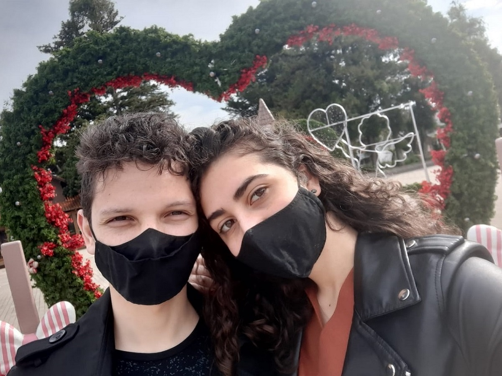

Pessoal
Willyan de Sousa Pereira, 23 Anos, estou namorando a quase 6 anos, natural de Curitiba, moro em Araucária região metropolitana, sou hiperaaativo e tenho dificuldade de prestar atenção mas consigo aprender qualquer coisa estando sozinho ao belo som de rock classico.